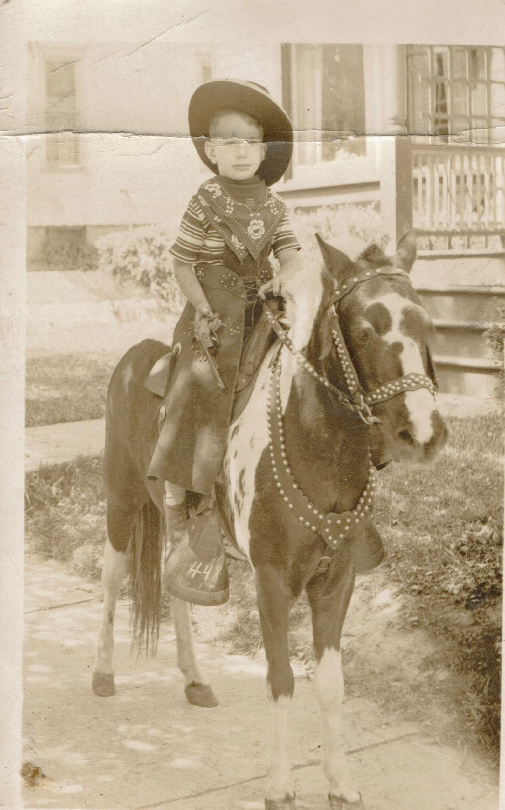

CAMPBELLs, LUGGs, & BLACKWELLs of Nelson, PA
Bill Thompson's Memoir
Chapter 1 - My Before School Years: "In the beginning ..."
I was born in the middle of the Great Depression, in Binghamton General Hospital, Binghamton, NY. Which, according to journalists, makes me part of “The Silent Generation,” a term which I have always disliked and felt was a misnomer.
My parents were "citified", but grew up on farms. They were part of the “Late Victorian Period” (if you consider the era's architecture and furniture) or what some US historians see as the "Progressive Era" (1890 - 1920). My father, Walter Frederick Thompson, Sr. was born in 1893. And my mother, Jessica Phoebe HOYT Thompson (according to her) or Phoebe Jessica HOYT Thompson (according to him -- they had a running, for fun, squabble about it) was born in 1892. He addressed her sometimes as ‘Jess’ and sometimes as “Phebe.’ I was a mid-life surprise. I joined them and my three siblings at their home at 8 Bayless Ave., where I lived for my first year in Binghamton’s 5th ward, near Ross Park. My siblings, Walter Jr., Anne Elizabeth and Henry G. were enough older that they often seemed more like uncles and aunt, than brothers and sisters. Walter, Jr. (nicknamed ‘Tom’ even before he was born) was almost 18 and had already graduated from HS and was working; Anne Elizabeth was 16; and Henry G. (originally ‘Gray’ for unknown reasons, but he later had it legally changed to ‘Goodrich’) was almost 13.
My 2nd year was spent just east of Binghamton, on Conklin Rd., NY Route 7, Town of Conklin. One story that I was told many times, but don’t consciously remember, was of a day when my siblings took me for a canoe ride on the Susquehanna River that ran behind the house, got fooling around and tipped over. They had visions of my drowning, but were relieved to see me (according to Anne) “happily dog paddling.” But I wonder if subconscious memories account for why to this day I like being ON the water, but not IN it.
I have no conscious memories of living in either place, but do remember our 3rd home, 14 Columbia Ave., Binghamton, a return to its 5th ward. I was almost three. Next door was a candy maker who had turned his whole basement into a candy production line that changed with the season, sometimes taffy, sometimes hard candies, and for Christmas season, candy canes and best of all, ribbon candy. Plus they had a 4 year old granddaughter who liked to play “doctor” and contributed to my early education.
Looking back, I think the reason we moved so often was because during the depression, my father, a skilled tool and die maker, was out of work much of the time or underemployed such as working on a loading dock, so they probably had trouble paying the rent -- altho my mother was working as an elementary school teacher. I had no idea what a “depression” was or that the family was struggling financially. Tom was working full time, but his job in the mail room of an insurance company only paid $10/week. I never went hungry, but remember many nights when supper was a bowl of potato soup and a square of fresh baked cornbread. Or fried cornmeal mush with maple syrup. Or, occasionally, milk toast. I suspect some of my bones developed slightly misshapen because of not getting enough milk.
But they were good years. I have many happy memories of Columbia Ave. Running out to greet my father when he came home and hugging his knees so tightly that he couldn’t walk (which he didn’t care much for); or gathering pocket fulls of shiny horse chestnuts; and Tom putting me in one of his Adirondak pack baskets and taking me with him on his hikes -- often taking along a .22 rifle he’d carved a stock for, and "plinking" (often successfully) at squirrels. (Fried squirrel is quite tasty.); of the first friend I remember, Johnny Tinklepaugh (whose name I found fascinating). And many other memories. The iceman delivering big blocks of ice he carried via large tongs. A hawker with a heavy Italian accent, who came down our street each day in season with his horse drawn wagon selling fresh produce and calling out what he had that day. He hadn’t grown it all himself, because I remember him selling bananas. One day a photographer and his pony came down the street and my mother paid his fee to take my photo, in cowboy attire, on the pony. And of course there was a milkman and the wintertime miracle of how the bottles of cream would partially freeze and push up their paper caps on a white, frozen column. And let's not forget Fuller Brush salesmen with their amazing, can do anything, line of products. Their brushes were very good. And, I also remember Tom building a kayak in the basement from a kit, then discovering he couldn't make the turn needed to get it out of the cellar door and having to remove the canvas and partially disassemble the frame to get it out. I also have vivid memories of a Pyrex percolator that was on the gas range making coffee, but broke when I was near the stove, spilling boiling water on me that raised blisters that reminded me of half potatoes.This is where we lived when Hank got polio, and had to spend a very hot, pre-airconditioning summer in a body cast because of scoliosis. He got very creative as to what he could use for back scratchers. Yardsticks, coat hangers, most anything that was thin enough to insert under the cast was fair game.
Writing about Hank's polio reminds me about doctors' house calls. In those days, if you were sick, the family doctor came to see you. Accompanied of course by his (almost all doctors were male) omnipresent "little black bag. It didn't contain much -- a stethoscope, thermometer, stopwatch. tongue depressors, several large bottles of pills, a few ointments and tonics, bandage materials, and probably supplies and equipment for stitches. The pills were only for routine stuff: diarrhea, nausea, constipation, fever, pain and that was about it. Sulfa drugs and antibiotics hadn't been invented yet.
Most employers didn't offer health insurance -- that came in the WW2 days of labor shortage. Paying doctors was rather informal. During the Depression, my parents, like most people, often didn't have any money to pay the doctor. Our family doctor, Martin Weis, (who delivered me) was an angel. When my parents, embarrassed, would say "We can't pay you today," he would reply "Don't worry about it, I know you'll pay me when you can." Country doctors often were paid with a bushel of potatoes or a couple of chickens.
At this house (and subsequent ones when I was a kid), a big event was coal deliveries. They would back a dump truck up to the house's cellar window to the coal bin, extend shiny, steel chutes into the opened window, and the coal would slide down with a glorious roar. Toward the end of the delivery, which usually involved increasing the angle of the cargo portion of the truck, one or two workers would get in the compartment to shovel the last of the load down the chutes. The pets would hide. It's excitement broke up the daily monotony.
I would be remiss, if I neglected to tell you this about living in that house. Frequently, men (some of them hobos), would come to the door asking to do chores in exchange for food. Dad was pretty handy with tools, and with two teen age sons, we seldom needed their assistance, but out of respect for their sense of dignity mom would often accept a chore in exchange for a meal. Sometimes we didn't have enough food for that, but she would never send them away with nothing. She'd at least give them an apple or a peanut butter sandwich, even without a chore.
Next we moved back to Conklin Rd. a mile or two east of where we’d lived before. It was farther from the river, but Tom built a conveyance, consisting of a pair of bicycle wheels on an axle, such that the width of the canoe would fit between the wheels, and a strap would secure it, that enabled you to easily tow the canoe down to the river -- which wasn’t as close as the earlier house had been. Between the house and the river were waterholes -- depressions several feet deep where spring flood water was trapped and you could fish for bullheads. I had pretty good luck and learned, the hard way, how to remove them from the hook without getting “stung.” Employment was picking up as US factories turned out Lend Lease weapons and equipment for Britain. So I don’t think that moving this time was because paying the rent was the problem, I think it was for more room. By this time, my mother’s mother, Frances Viola GOODRICH Hoyt, had joined us, replacing the housekeepers my mother had previously employed when possible. She needed a home. She’d been living with her youngest daughter, Isabelle HOYT Field in Elmira, who suddenly died of meningitis. Apparently a mother-in-law was no longer welcome, and gram had to find another home and she stayed with us for the rest of her life.
One story about her I want to be sure to tell you relates to cigarettes. Gram babysat me while my mother taught school. Like most folks those days, gram smoked, which I thought was pretty cool. So one day when she lit up after lunch, I asked if I could try one. So she removed one from the pack, lit it and handed it to me. Followed by a second when I asked. I was on my third when I suddenly “turned green,” began barfing, and was as sick as a dog for the rest of the afternoon. Mom was furious when she got home, but I never wanted another cigarette.
An incident happened then that I will never forget. I had a cocker spaniel puppy, my first dog. One day when we were playing in the side yard, the puppy ran out into the side road and was run over by a passing neighbor’s truck. The neighbor felt terrible about it, but he had no chance of stopping when the dog darted out in the street so suddenly. But being run over caused the dog’s eyes to pop out or his head -- a sight that haunted my nightmares for years.
The kitchen door that I entered that day intrigued me. It was a Dutch door and the top half was always open in the summer -- air conditioning was still in the future. I couldn’t see out over it, and one of my ambitions was to grow enough to look out over it, but I think we moved before that was accomplished.
We might have had to move sooner than we did, thanks to my excavating the next door neighbor’s front yard. I had a perfectly justifiable reason. I saw a rainbow that ended in the middle of his front yard and wasted no time trying to discover the leprechaun’s treasure. Unfortunately, the neighbor came home before I succeeded and was very uninterested in letting me complete the task. Dad managed to mollify him and make amends. For months I itched to complete the task, but knew I’d be in big trouble if I tried.
I didn’t play in the front yard much -- Conklin Rd had heavy traffic. There was no sidewalk beside the road and no paved driveway, but there was a sidewalk from the rarely used front door to the road. It was maybe 30 feet long, so that sidewalk was where I flew/peddled my airplane and that made a perfect runway for me. It had the same chassis as a four wheeled, peddle it yourself, kids’ car, but with an airplane chassis and very short wings . I loved peddling that -- being careful not to get too close to Conklin’s main road.
On the other side of that road was Lawrence Brothers’ large farm. Later on they had a dairy and ice cream shop. But back then they just had many acres on the Susquehanna flood plain’s rich soil and ample aquifer planted with a wide variety of vegetables that they shipped by the truck loads. And, out of sight, farther down the road - a produce stand. My strongest memories of that farm were in the spring, when they spread cow manure on the fields as fertilizer. I never minded the smell. It was just one of the “signs of spring.”
My mother taught K through 3rd grade in one room. It wasn’t a 1 room country school, it had two floors and 3 rooms. K - 3 had the entire first floor and the 2nd floor had a room for the combined 4th and 5th grades, while the sixth graders had a room all their own -- taught by the principal. Having multiple grades in the same room worked out amazingly well -- more on that in the Education Chapter.
Kindergarten wasn’t compulsory. Having your child as one of your pupils presents problems. My mother knew she’d be my first grade teacher, so I didn’t attend kindergarten. Just stayed home, played, and smoked cigarettes (but very briefly). :)
I loved being read to and couldn’t wait to be able to read whatever book I wanted, whenever I wanted. However my mother was afraid that it would “spoil” first grade for me if I learned to read before getting there. So, she forbade my siblings from teaching me. But, as they read the newspaper comic strips to me, I talked them into pointing to each word as they read it aloud. I still had a lot to learn when I got to first grade, such as how to “sound out words,” but I was reading pretty well. (BTW, most people I encounter in the Allentown, PA area, don’t know how to sound out words. When people see my address, “Pericles Place” they have no idea how to pronounce it. Or spell it if they hear it, how to spell it. Which shows they either didn’t ever study Athenian history or if they did, didn’t pay attention. We studied it in Binghamton in my day. Moreover, many pharmacy staff and medical office personnel processing a list of what medications you take or how to pronounce medications they aren’t familiar with. It’s too bad they never were taught how to "sound out" words.)
Watching my siblings read comic strips such as Little Lulu, Dick Tracy, Popeye, Little Orphan Annie, The Phantom and The Katzenjammer Kids to me, plus listening to anyone I could find read Uncle Remus, Peter Rabbit, Winnie The Pooh, and Uncle Wiggily to me, set the stage for our next chapter. Every Uncle Wiggily story ended with a teaser, written by the author's wife, such as
"Now next I’m going to tell you about the Kinkytails and the doll’s house—that is, if the alarm clock will stop making figures all over my paper so I can write the story, and if the coffee pot doesn’t step on the rolling pin’s toes."
So -- in that spirit, "Next I'm going to tell you what happened after I learned to read."